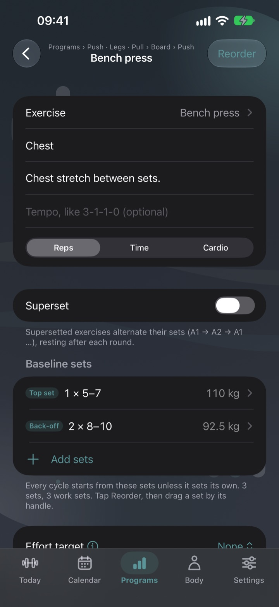
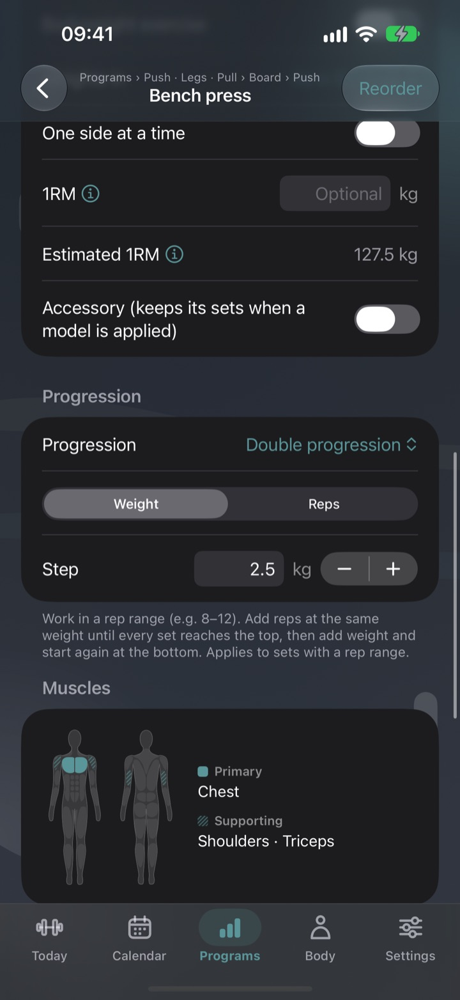
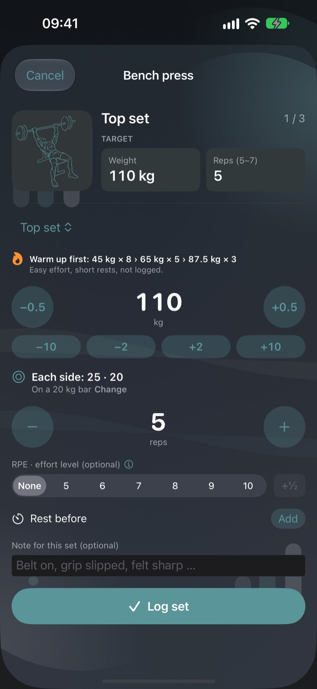
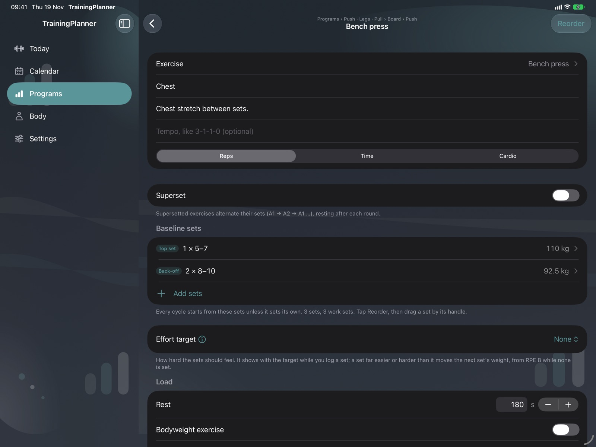
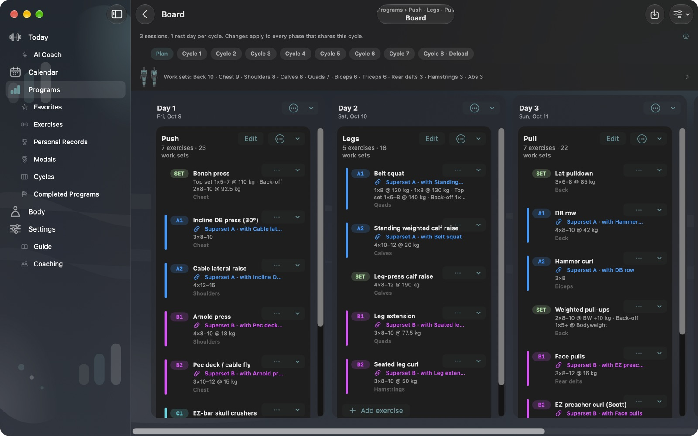

Training methods
Double progression: add reps, then weight
Pick a rep range, say 8 to 12. Add reps at the same weight until every set reaches 12, then add weight and start again at 8. Two things progress, one after the other, which is where the name comes from.
How it works
Say three sets of 8 to 12 reps on dumbbell presses, with 24 kg dumbbells. The first time you get 12, 10 and 9. Next time the target is one rep more than your weakest set, 10 on every set, and you get 12, 11, 10. A few workouts later it's 12, 12, 12: every set at the top of the range. Now the dumbbells go up to 26 kg, and you're back at 8 or 9 reps, with room to climb again.
| Workout | Weight | Reps | Next time |
|---|---|---|---|
| 1 | 24 kg | 12 · 10 · 9 | Same weight, a rep more |
| 2 | 24 kg | 12 · 11 · 10 | Same weight, a rep more |
| 3 | 24 kg | 12 · 12 · 11 | Same weight, a rep more |
| 4 | 24 kg | 12 · 12 · 12 | Every set at the top: 26 kg, back to 8 |
| 5 | 26 kg | 9 · 8 · 8 | Same weight, a rep more |
Why use it
The weight steps are big. Going from 24 to 26 kg dumbbells is more than 8 % heavier; no one adds that every workout. Reps bridge the gap. The same goes for cable stacks, machines and kettlebells, which come in 4 kg steps.
It suits muscle growth. Sets of 6 to 15 reps taken close to failure build muscle well, and a rep range keeps you in that zone while still asking for more every time.
It lasts. Linear progression asks for a heavier bar every time and runs out within a year. Double progression asks for one more rep, somewhere, and keeps finding one for much longer.
Choosing the range
- Compound lifts (presses, rows, squats): about 6–8 or 8–10. Lower ranges for heavier work, where a rep is a big step.
- Isolation exercises (curls, raises, extensions): 10–15 or 12–20. Small muscles and light weights, where the top of the range is reached slowly.
- A range of about four reps works well. Too narrow (8–9) and you're adding weight every other workout; too wide (8–20) and you sit at the same weight for months.
Set it up in TrainingPlanner
Double progression needs two things: a rep range on the sets, and the exercise's progression set to double progression. Both are in the exercise's page, which you open from the board.
- Open the program, tap the board, and tap the exercise.
- Under Baseline sets, open a set and turn on Rep range: the bottom and the top of it.
- Under Progression, pick Double progression, and the step the weight goes up by once every set reaches the top.
- Or set it for the whole program at once, on its Progression page.



In the workout, each set starts at the weight and the reps the rule gives, with the reason: "Same weight, aim for 11 reps (range 8–12)", or "12 reps on every set last time: +2.5 kg, back to 8 reps". It looks at the set that did fewest reps at the weight you used most, so one good set doesn't move the whole exercise.
Bodyweight exercises climb by reps the same way. Once every set is at the top, the app suggests adding load or a harder variation: a weighted belt, a backpack, or the next push-up up the ladder. Holds and cardio climb in seconds and minutes.


Free or Pro. Rep ranges are in the free app, and every set starts from what you did last time. The progression models, which move the reps and the weight for you, are part of TrainingPlanner Pro.
Programs that use it
Most of the muscle-building programs in TrainingPlanner: Push · Legs · Pull, Upper · Lower, Push · Pull · Legs ×2, Dumbbell Full Body, Machine Full Body and Kettlebell Full Body, among others.